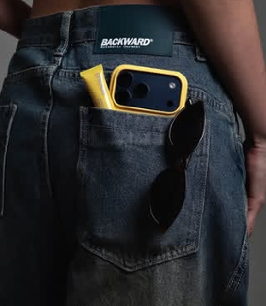
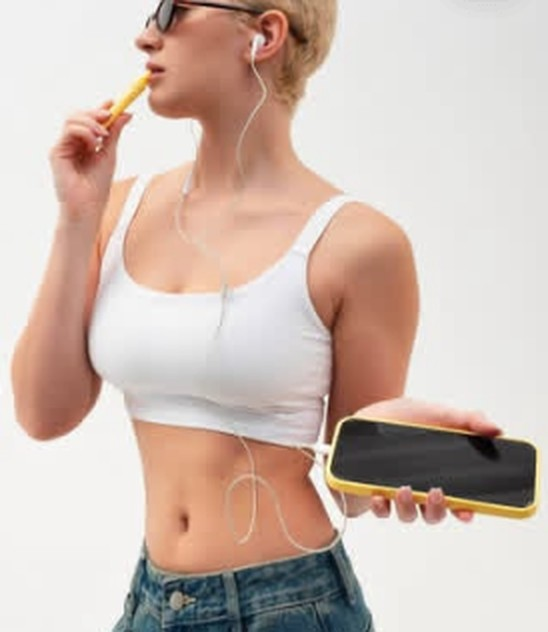
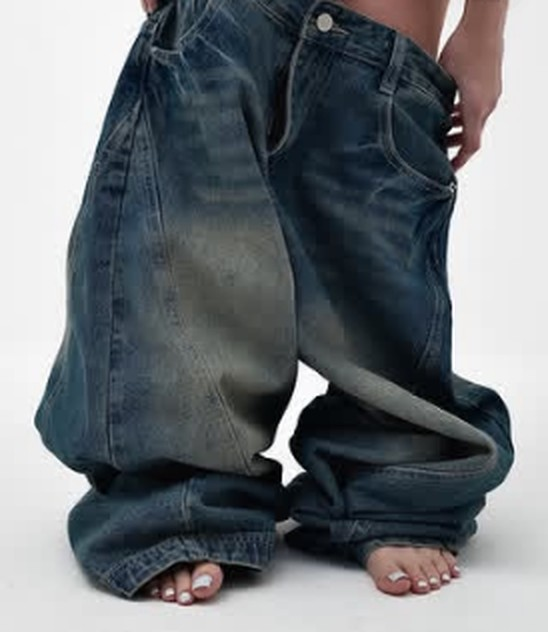
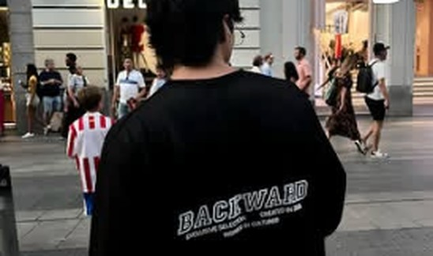
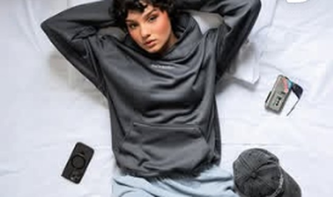

BACKWARD®
Inspired By Culture. EST.23 — Art and aesthetics.


El drop
Denim ancho de lavado vintage, tees y hoodies con el logo. Tallas, precios y disponibilidad: por mensaje.



Inspired By Culture. EST.23 — Art and aesthetics.


Denim ancho de lavado vintage, tees y hoodies con el logo. Tallas, precios y disponibilidad: por mensaje.


